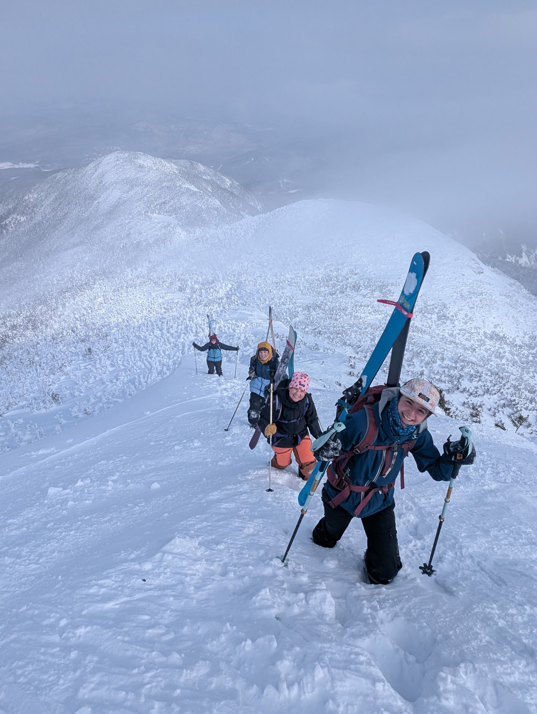

What is Backcountry Skiing?

Backcountry skiing involves hiking up to ski down terrain outside of the resort.
The Gear
- Skis
- Uphill bindings/compatible boots
- Skins
- Beacon*
- Shovel*
- Probe*
* only necessary for avalanche terrain
Why Backcountry Ski?
- Find new terrain!
- It's a great workout!
- Enjoy the outdoors!